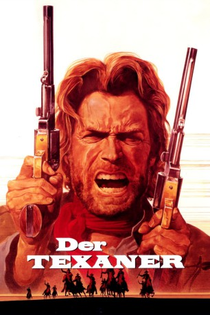

#1719 Der Texaner
Alternativ: The Outlaw Josey Wales
Auszeichnungen: für 1 Oscars nominiert
 
 IMDB-Wertung: 7.9 / 10
IMDB-Wertung: 7.9 / 10  Metascore: 69
Metascore: 69 
Western von und mit Clint Eastwood, der auf dem Roman "Gone to Texas" von Forrest Carter basiert. Die Familie des Farmers Josey Wales wurde gegen Ende des amerikanischen Bürgerkriegs von den Jayhawkers, irregulären Nordstaatensoldaten, grausam ermordet. Josey flieht nach Texas, doch der Showdown mit seinen Widersachern ist unvermeidlich.
Jahr: 1976
Dauer: 135 Minuten
FSK: 16
Land: USA Studio: Warner Bros A Warner Communications CompanyTonspuren: DD1.0 - ,
Untertitel:
Auflösung: 1080p (1920x800) Größe: 9994 MB
Genre: Western
Regisseur:  Clint Eastwood
Clint Eastwood
Drehbuch: Forrest Carter, Philip Kaufman, Sonia Chernus
Soundtrack: Jerry Fielding
Darsteller:
Datei: X:\HD-Western-1960-1979\Texaner, Der (1976, FSK16, 1920x800).mkv seit 10.08.2015
Festplatte: HD Eastern+Western
 Es gibt insgesamt 110 Filme in der Gruppe 'HD-Western-1960-1979'
Es gibt insgesamt 110 Filme in der Gruppe 'HD-Western-1960-1979'